I like sitting with the business, shipping the system, and owning the outcome from end to end.
Discover
I like to work close to the business. That is what I did at Messe München as first point of contact for IT demand, and now at Allianz for AI use cases in claims and process intelligence.
Build
I enjoy building working prototypes myself. Approval flows in Access, VBA and Power Automate at Messe. A Streamlit rating platform for my thesis. Local Python prototypes at Allianz before anything touches the enterprise stack.
Deploy
A tool that nobody uses is not really finished. So I care about documentation, decision templates, and things like the internal Claude Code workshop I ran at Allianz to help the team actually adopt the workflow.
Learning a language.
I studied German Language and Literature at Jilin Normal University. A lot of speech competitions, a lot of vocabulary lists, and my TestDaF certificate about eighteen months in. The photo on the right is basically what my desk looked like for two years.

Language meets machine.
I moved to Munich to start a B.Sc. in Computational Linguistics with a minor in Computer Science. For me, large language models are the interesting bridge between the two sides of my background: the years of studying how humans use language, and the code that lets machines start to work with it.
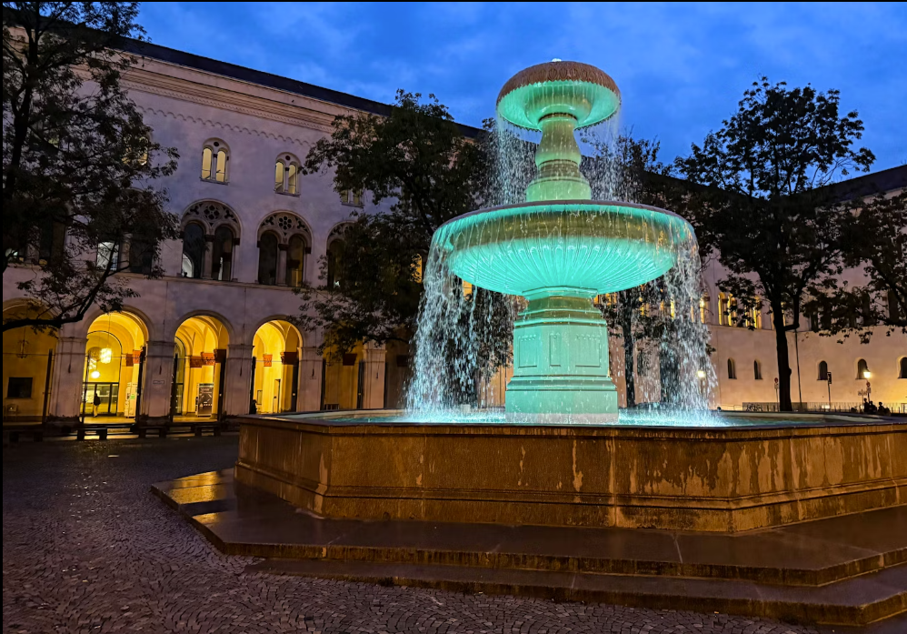
SLS Language Hub.
My first real project. I joined the RS Components global competition as linguist and programmer, building a Python tool that turned meeting presentations into text and helped design a real-time language training solution. Our team ended up in the global top ten, which was the first time I saw my two backgrounds actually paying off together.
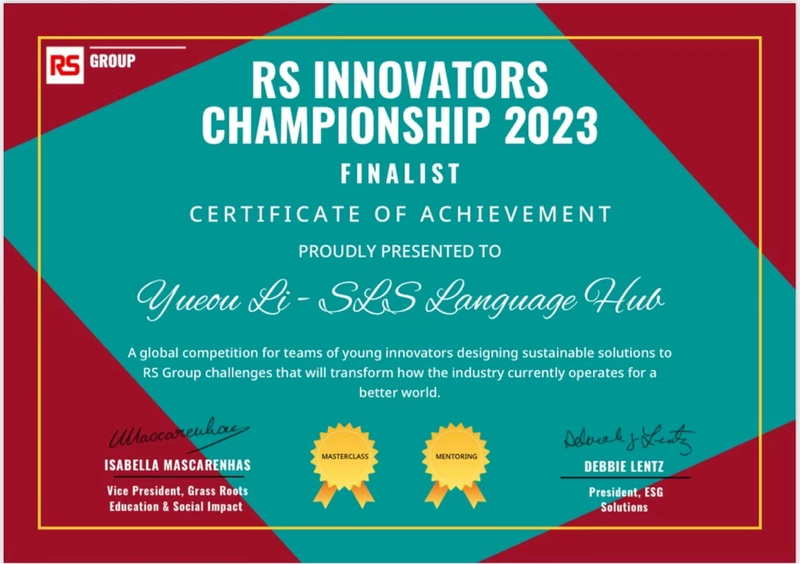
Team lead.
For the LMU Software Development Project I led a student team that built “Ticket to Ride” and a small chat application. I handled task distribution and sprint planning, and wrote the backend logic in Python with Pygame. We used GitLab for version control and shipped everything on time.
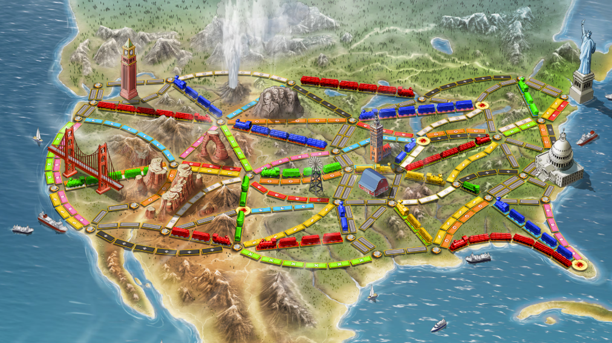
IT demand.
At Messe München I was the first point of contact between the business departments and IT delivery. I worked on the Salesforce stabilization concept, set up test environments, and did error analysis. The project I’m most proud of is a fully automated approval workflow I built on top of an existing Access database: VBA exports the data, an email kicks off the approval, and Power Automate handles the rest. It cut a lot of manual work out of the process.
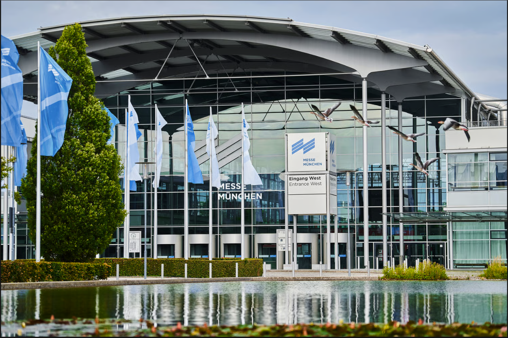
Bachelor thesis.
My thesis was called «Evaluating Back-Translation as a Strategy for Multi-Reference Generation in Text Simplification», supervised by Prof. Dr. Barbara Plank. I designed a human evaluation protocol with Likert ratings for Meaning, Fluency, Simplicity, and Diversity, applied SARI and BERTScore, and ran the correlation analysis. To collect the human ratings I built a small interactive rating platform in Streamlit.
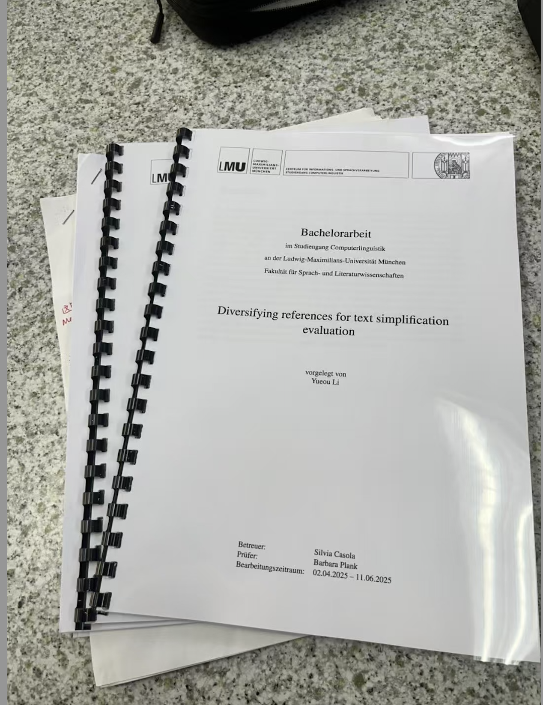
Allianz · GenAI.
I’m currently a Werkstudentin in Process Intelligence & Innovation. My work centers on evaluating vision and multimodal AI models for internal proof-of-concept projects, covering things like object detection, image-text alignment and metadata extraction. I designed the evaluation matrix we use to compare AI solutions against accuracy, scalability, integration effort and compliance. On the side I ran an internal Claude Code workshop to help my team pick up AI-assisted development.
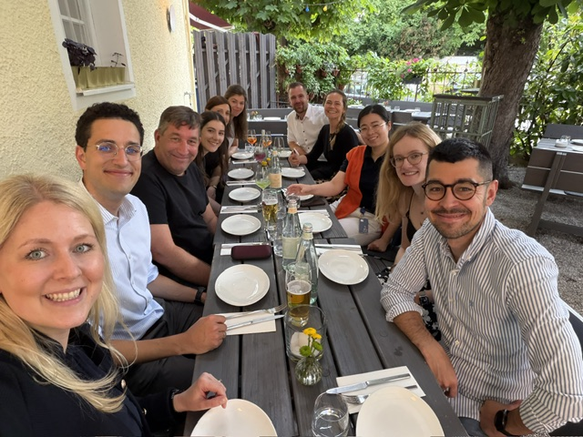
Papers on the wall.
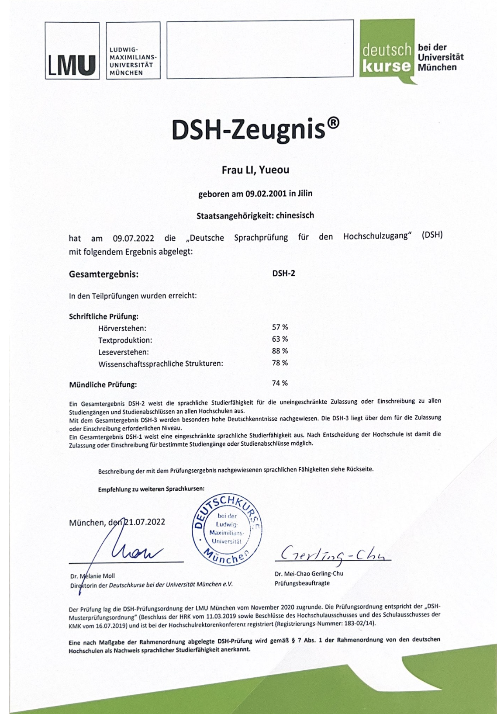
DSH-Zeugnis
Deutsche Sprachprüfung für den Hochschulzugang — DSH 2. LMU München. Ergebnis: Hören 57 % · Textproduktion 63 % · Lesen 88 % · Wissenschaftssprache 78 % · Mündlich 74 %.
Professional Scrum Master I
Certified during Werkstudentin role at Messe München IT Demand Management. Foundational Scrum mastery: framework, terminology, and consistent application to cross-functional delivery.
European Young Engineers & conferences.
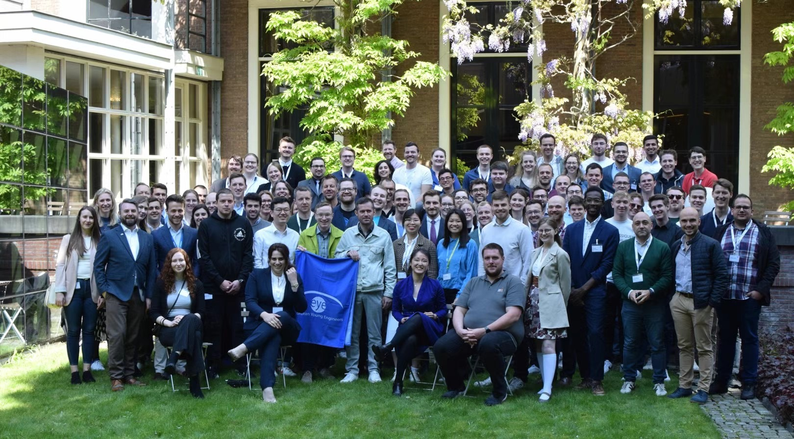
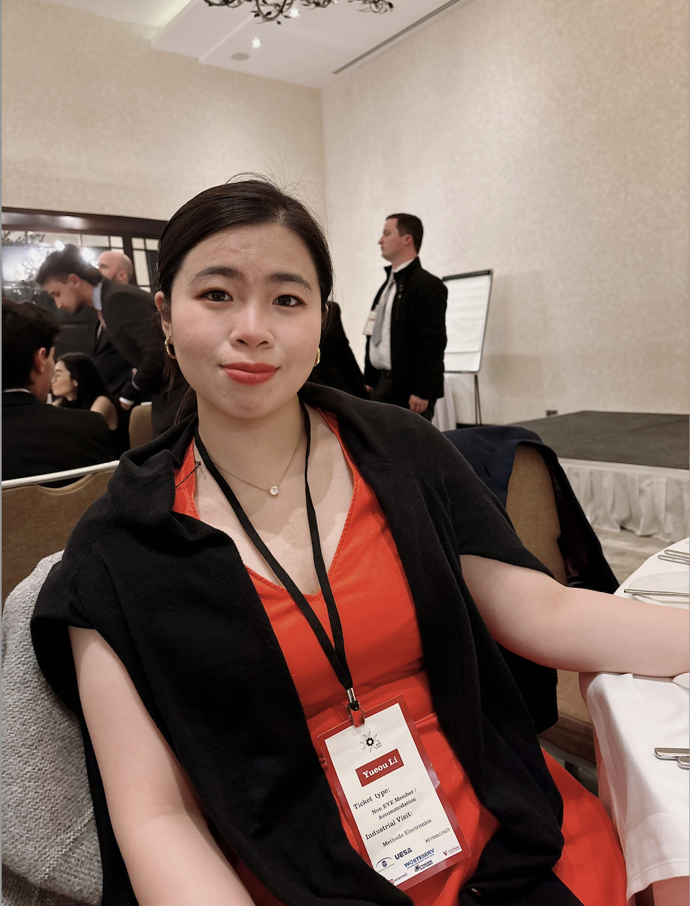
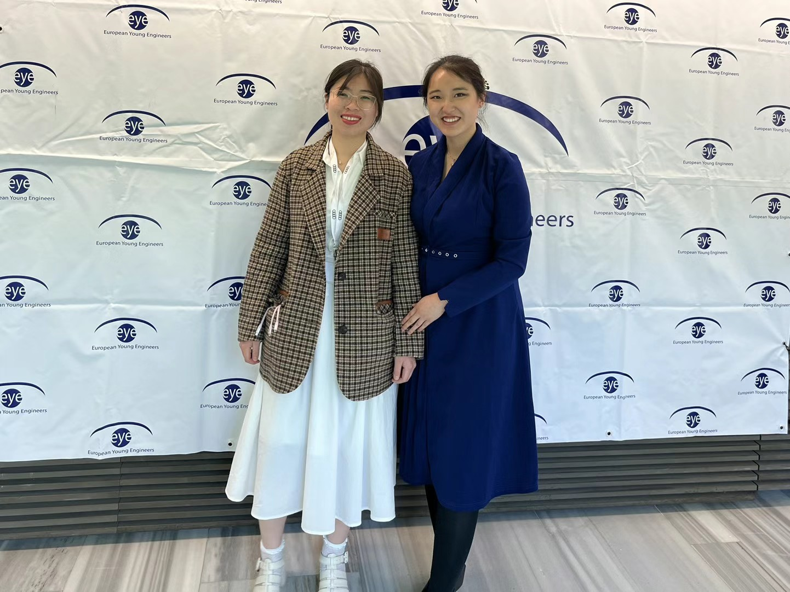
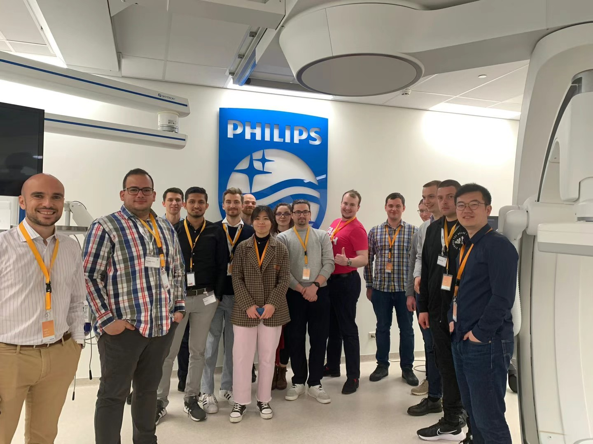
I’m active in European Young Engineers, which is where the photos above are from: our annual gathering, a visit to Philips HQ, and meeting our president Nadja Yang. It’s a nice way to zoom out from Allianz and see how other companies across Europe think about engineering.
Paid on the side.
These are real freelance jobs I did alongside my studies. Bilingual work that trained my negotiation skills faster than any classroom could.
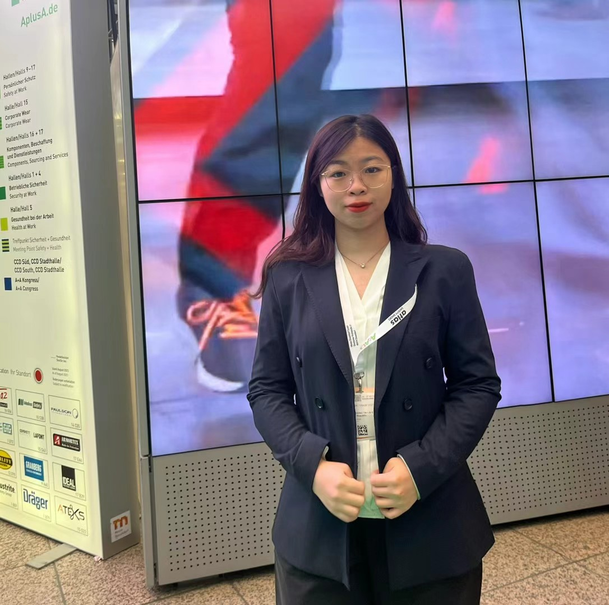
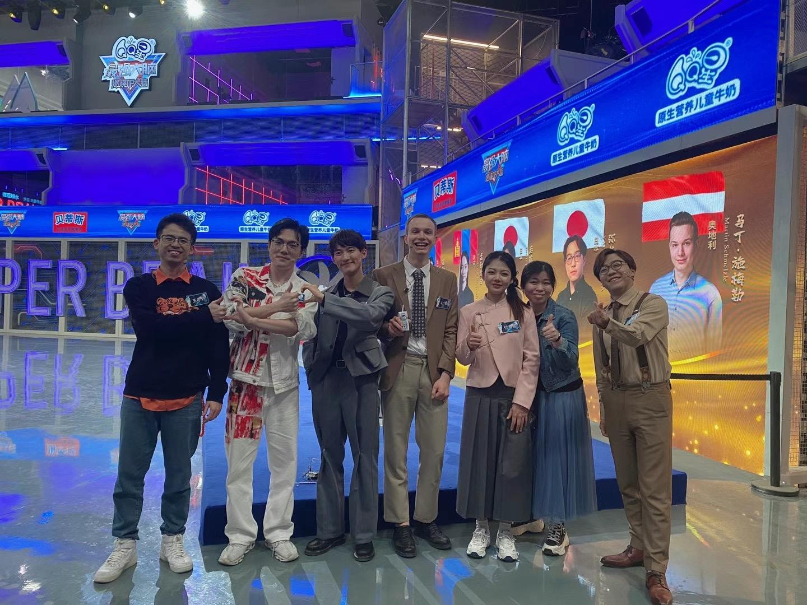
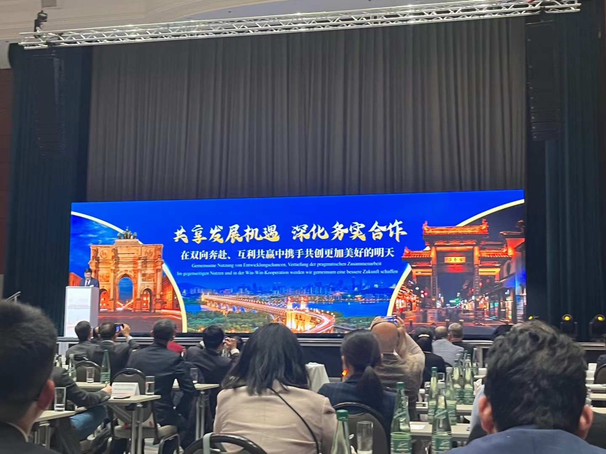
Trade fair translator
Two years with Guangzhou Huan Yu, translating for Chinese exhibitors at trade fairs in Germany. I did live interpretation between Chinese, German and English, and handled negotiation on the exhibitors’ behalf.
TV agent & translator
For Jiangsu Media I worked as a contracted agent and translator on «World’s Strongest Brain International», coordinating between foreign contestants and the production team.
Business events
I co-organise Chinese-German business events, handling bilingual moderation, guest coordination and the usual on-site logistics.
What I do for myself.
Fußball on Tuesdays.
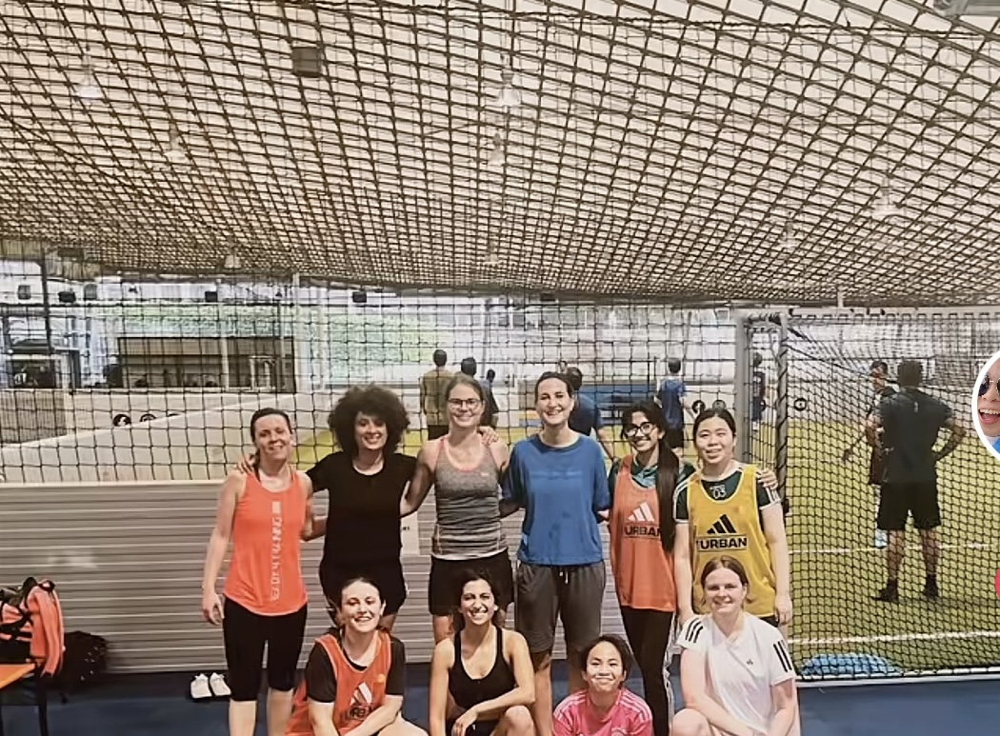
I play weekly with a mixed team in Munich. It’s the one place where nobody talks about my job title, my thesis or my roadmap. Ninety minutes to run around and reset.
Vibe coding.
Since the start of 2026 I’ve been vibe coding pretty much every day. Little tools, weird prototypes, half-finished ideas that get finished the next weekend. It’s how I keep my hands warm and my thinking sharp outside of work, and honestly the fastest way I’ve found to learn a new stack.
github.com/yueouLiForward Deployed Engineer.
What I’m looking for is a role where I get to work close to a customer team, understand the way they actually operate, and then help them ship something that works. My background sits somewhere between business, engineering and language, and that mix is exactly what I’d love to keep using every day.
Comfortable owning requirements engineering, stakeholder mapping, decision templates and internal workshops.
Day-to-day Python, AI and ML prototyping, Streamlit, Power Automate, VBA, Bash, Git.
German (C1–C2), Mandarin (C2), English (B2–C1). Plenty of practice moving between DACH and China contexts.